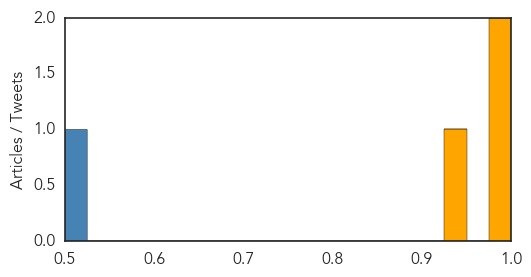
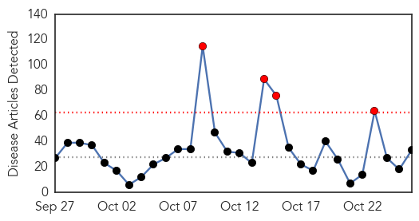
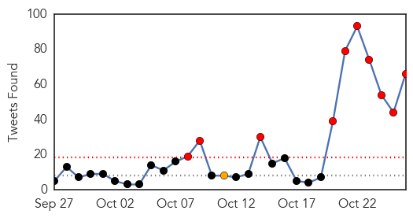
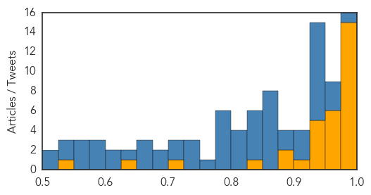

MERS
30-Day Web Trend
1 alerts, 0 warnings

30-Day Twitter Trend
5 alerts, 0 warnings

Article Locations

Article Confidences
Top Articles:
Top Tweets:
- 0.677
- AFD Blog `Saudi MOH: Hofuf MERS Hospital Cluster Increases MERS-CoV https://t.co/5rwekfe0bq
- 0.619
- AFD blog `Korea: Quarantine Lifted On 190 Contacts Of `Relapsed’ MERS Case' MERS-CoV https://t.co/e7hHsUF8oK
Ebola
30-Day Web Trend
4 alerts, 0 warnings

30-Day Twitter Trend
10 alerts, 1 warnings

Article Locations

Article Confidences
Top Articles:
- 1.000
- Deadly Mers,Ebola Virus & Bird Flu, Still Untreatable
- 1.000
- Approaching Zero: How West Africa Is Crushing The Ebola Epidemic
- 1.000
- Approaching Zero: How West Africa is Crushing the Ebola Epidemic
- 1.000
- Mystery deaths in Sierra Leone spread fear of Ebola relapses
- 1.000
- How West Africa is Crushing the Ebola Epidemic
- 0.998
- Would you volunteer to take part in THIS medical trial? You'll be paid £750 but there's one catch
- 0.998
- Ebola nurse 'critically ill' in hospital after condition deteriorated
- 0.998
- Dr. Nancy Snyderman 'very sorry' for breaking quarantine
- 0.998
- MERS, Ebola, bird flu: Science's large skipped possibilities
- 0.994
- Ebola Anniversary: Friends Set Up Adadevoh Health Trust
- 0.994
- Experience from the trenches in the first Ebola outbreak
- 0.992
- Rethinking Pandemics At Several Levels – Greg Laden's Blog
- 0.986
- 'Significant improvement' by Ebola nurse Pauline Cafferkey
- 0.984
- Ebola nurse Pauline Cafferkey has meningitis caused by virus
- 0.978
- UK nurse critically ill after Ebola infection returns
- 0.967
- Foreign military role in Ebola crucial, questions over future use-experts
- 0.965
- Nurse Pauline Cafferkey suffering from meningitis caused by Ebola
- 0.965
- Liberian VP visits Minnesota, asks for more help in Ebola recovery
- 0.962
- Foreign military role in Ebola crucial, questions over future use
- 0.959
- Foreign military role in Ebola crucial, questions over future use-experts
- 0.955
- Foreign military role in Ebola crucial, questions over future use-experts
- 0.950
- Scottish nurse recuperating after EVD complications cause meningitis
- 0.945
- Ambassador Kamara addresses African Union on Ebola
- 0.935
- LIBERIA: UNDP Donates 150 FM Radios To New Georgia Community
- 0.933
- Saint Lucian to deliver lecture on Ebola
- 0.929
- Southern Europe is a new disease ‘hot zone’…”The world slept as Ebola overtook West Africa. We should not make the same mistakes in the Middle East and the Mediterranean.”
- 0.917
- ECOWAS to Establish Centre for Disease Control in Nigeria
- 0.895
- Military played important role in Ebola crisis
- 0.877
- Nurse Kaci Hikcox Sues New Jersey Governor Chris Christie Over 'Unconstitutional' Ebola Quarantine
- 0.842
- Veep Boakai Holds Discussions with Diaspora in Minnesota
- 0.703
- Africa Information
- 0.649
- Cuba Refuses to Pay Doctors Sent Abroad to Fight Ebola
- 0.536
- Detained nurse suing Chris Christie and New Jersey
Top Tweets:
- 0.999
- Science failure: Deadly Mers,Ebola Virus & Bird Flu, Still Untreatable - https://t.co/TSEiVbK22m ebola
- 0.999
- Ebola: United Kingdom nurse has meningitis caused by persisting disease -doctors - https://t.co/R9Z1t50Jy5 ebola
- 0.995
- Ebola Drbbbl - https://t.co/6DwXwZnH2q ebola
- 0.995
- BLADE Ebola - https://t.co/qRxRrShtqH ebola
- 0.993
- United States nurse quarantined over ebola fears sues - https://t.co/fws6cUxFjF ebola
- 0.991
- Ebola nurse recovering from rare meningitis - https://t.co/vGOn7ijdU7 ebola
- 0.991
- Ebola nurse recovering from rare meningitis - https://t.co/ajgY0HqXAB ebola
- 0.989
- Sexually Transmitted Ebola: Virus Stays In Survivors' Semen For Months - https://t.co/wiMwhsjoy6 ebola
- 0.989
- Aptopix Liberia Ebola - https://t.co/7V6uhmxx29 ebola
- 0.988
- MERS, Ebola, bird flu: Science's big missed opportunities - https://t.co/xbbiK11umq ebola
- 0.988
- Ebola nurse Pauline Cafferkey has meningitis caused by virus - https://t.co/Xw0gLuGwih ebola
- 0.987
- Stigmatized - life after Ebola - Deutsche Welle https://t.co/7WUnunZx24 ebola EVD
- 0.987
- MERS, Ebola, bird flu: Science's big missed opportunities - Yahoo News https://t.co/R6Bw6pI2T4 ebola EVD
- 0.987
- MERS, Ebola, bird flu: Science's big missed opportunities - Reuters https://t.co/kptywvbDnH ebola EVD
- 0.983
- Ebola surges back even after 'recovery' ... mystery deaths in Africa believed to be Ebola's third wave - https://t.co/JiXe6FEyvz ebola
- 0.983
- Ebola surges back even after 'recovery' ... mystery deaths in Africa believed to be Ebola's third wave - https://t.co/5iIM0E7kfJ ebola
- 0.982
- UK Ebola nurse condition 'significantly' better - https://t.co/iZn0Nmap9T ebola
- 0.982
- Ebola Anniversary: Friends Set Up Adadevoh Health Trust - https://t.co/eRDrwB9lLF ebola
- 0.982
- Approaching Zero: How West Africa is Crushing the Ebola Epidemic - Gizmodo https://t.co/QGvzQoXxUr ebola EVD
- 0.980
- 2015 Ebola Spread Maps - https://t.co/2mEVqOM7FJ ebola
- 0.979
- Ebola song - https://t.co/76HqK0SU1H ebola
- 0.979
- Approaching Zero: How West Africa is Crushing the Ebola Epidemic - https://t.co/iAKYkAsVgy ebola
- 0.979
- Approaching Zero: How West Africa Is Crushing The Ebola Epidemic - https://t.co/TffbAIE3XW ebola
- 0.976
- INSIGHT-MERS, Ebola, bird flu: Science's big missed opportunities - https://t.co/aPxDqKSKRw ebola
- 0.975
- Where am I? > Home > Health > Ebola may be transmitted by se - https://t.co/eRNh3WYF4K ebola
- 0.975
- Insight - MERS, Ebola, bird flu: Science's big missed opportunities - Reuters UK https://t.co/X1rqxit9xG ebola EVD
- 0.965
- Ambassador Kamara addresses African Union on Ebola - https://t.co/URDBhWYn1P ebola
- 0.962
- United Kingdom doctors say nurse suffering Ebola relapse has improved - https://t.co/iEbNTyZzDW ebola
- 0.962
- Nurse sues Gov. Christie for 3-day Ebola quarantine - https://t.co/q9Aal1UkP9 ebola
- 0.960
- Nurse Files Lawsuit Over 'Forced' Ebola Quarantine - https://t.co/TRIHbmOqIQ ebola
- 0.958
- Ebola Anniversary: Friends Set Up Adadevoh Health Trust - CHANNELS TELEVISION https://t.co/CuFpJTMiZV ebola EVD
- 0.944
- “Long recovery ahead” for ebola nurse - https://t.co/CJcv0OStdc ebola
- 0.944
- Long recovery ahead for ebola nurse - https://t.co/5Io04ZqEVS ebola
- 0.942
- foot and mouth, bird flu, ebola, migrants.... - https://t.co/1Rh4EAbAt3 ebola
- 0.942
- Foreign military response crucial to Ebola crisis - https://t.co/B0b4Pze7J7 ebola
- 0.932
- Gov. Christie Sued By Nurse Who Was Quarantined Over Ebola Fears - https://t.co/Jtqa2JrKuz ebola
- 0.932
- Ebola nurse 'critically ill' in hospital after condition deteriorated - https://t.co/icX6bE2Zjh ebola
- 0.932
- Ebola In The Middle East Poem by Tony Adah - https://t.co/ztNBjzUvLS ebola
- 0.931
- Ebola nurse 'critically ill' in hospital after condition deteriorated - Dispatch Times https://t.co/uS4KiGHMOy ebola EVD
- 0.918
- Scientist from Basingstoke hospital gets medal for fighting Ebola - https://t.co/wdnV4k7CTM ebola
- 0.913
- Sierra Leone’s Ambassador Kamara addressed African Union on Ebola https://t.co/z04NkOgrkE
- 0.911
- Ebola can linger in survivors for 9 months: research - https://t.co/ZqLDODif2T ebola
- 0.907
- In Liberia, One Brave Girl's Stand Against Ebola (VIDEO) - https://t.co/VMmDhBlzwu ebola
- 0.906
- UK nurse critically ill after Ebola infection returns - https://t.co/CtN4TiNZFv ebola
- 0.899
- Esteemed Saint Lucian to deliver Ebola lecture - https://t.co/r5YbYHqsYy ebola
- 0.897
- Fancy being injected with EBOLA? Lab seeks willing volunteers for research into vaccine - https://t.co/Gf977dNfya ebola
- 0.866
- 'We need a regional approach to end Ebola says President Koroma - Sierra Express Media https://t.co/ViEJHJPHdP ebola EVD
- 0.863
- MERS, Ebola, bird flu: Science's big missed opportunities - Yahoo News https://t.co/iAqoUO3dcX
- 0.861
- Saint Lucian to deliver lecture on Ebola - https://t.co/WCOf5i1QPh ebola
- 0.846
- Approaching Zero: How West Africa is Crushing the Ebola Epidemic - Gizmodo https://t.co/059jtOTWe2
Showing top 50 tweets...